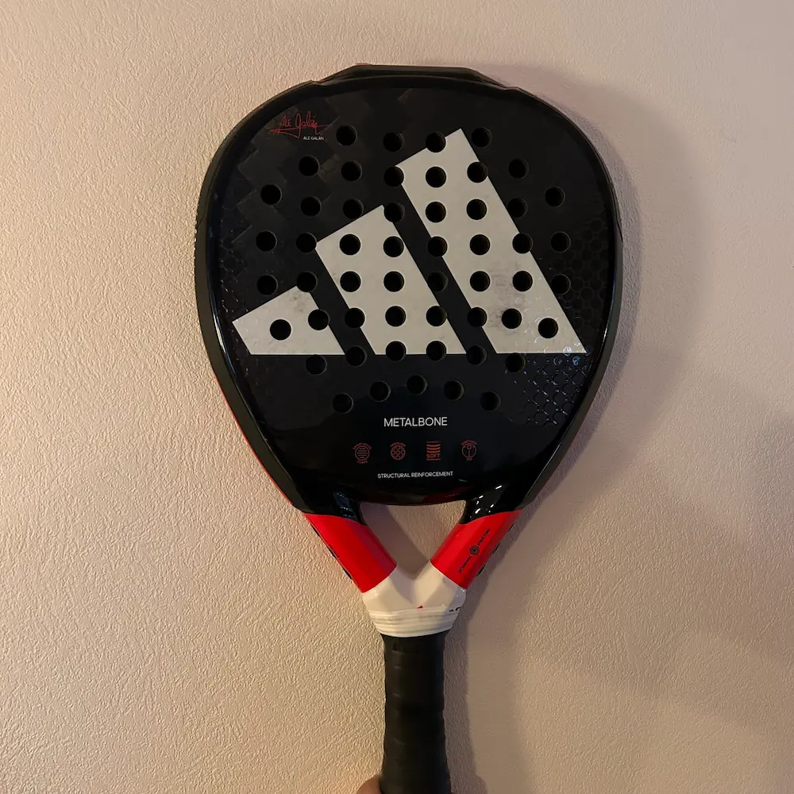

Udstyr
Hvis du vil i gang med padel, er det heldigvis ret nemt. Det eneste du skal bruge, er et padelbat og nogle bolde, og de fleste centre tilbyder både udlejning af udstyr og baner, så du kan prøve sporten af uden at købe det hele selv fra start. Når du er blevet bidt af spillet, kan det dog være en god idé at investere i din egen ketsjer, som passer til dit niveau og spillestil.
Tøjet minder meget om det, man bruger til tennis eller badminton: behageligt sportstøj, der giver dig fri bevægelse. Mange spiller i shorts eller tights og en t-shirt eller top. Skoene er vigtige, fordi man bevæger sig hurtigt fra side til side. Der findes særlige padelsko, men i begyndelsen kan et par gode indendørs- eller tennissko sagtens bruges.
Alt i alt kræver padel ikke det store udstyr for at komme i gang, og netop derfor er sporten så tilgængelig – du kan stort set bare møde op, leje en ketsjer og spille.

Anbefaling af begynder bat
Babolat Stima Spirit
Stima Spirit er til den nye begynder, som leder efter maksimal kontrol, men uden at gå på kompromis med power. Battet har en hård overflade som giver et gimrende touch på bolden. Battet er udstyret med lidt blødere skum, som gør det muligt at få mere kraft på bolde.
Køb battet her
Adidas Metalbone HRD+

Metalbone HRD+ er den lidt mere kraftfulde storebror til det originale Metalbone bat. Men HRD modellen får du maksimal power, og det er til den mere agressiv spiller. Spilleren som typisk kommer fra andre sportsgrene og har styr på det tekniske.
Køb battet her
Nox AT10 Genius 18K
Nox AT10 er et bat med en hybrid hovedform, som både giver power i dine slag, men samtidig uden at gå på kompromis med kontrollen. Sweetspottet er placeret lidt højere i batte for at øge slagkraften. Overfladen er hård og med medium hård skum.
Køb battet her
Adidas Metalbone
Adidas Metalbone sikrer et diamantformet hoved og en neutral balance dig masser af power. Det understøttes af de tæt vævede carbonfibre i battets overflade, der faciliterer en effektiv energioverførsel og endnu mere power i dine slag. Det anbefales til begyndere, men også lidt mere øvede spiller. Det er et bat, mange ville kunne bruge.
Køb battet her
Head Alpha
Head Alpha er padelbattet til allround-spilleren, som vil have det klassiske mix af kontrol og power. Det får du med Alpha Ultimate Pro-battet, som med sin dråbeform og neutrale vægtbalance placerer sig i midten af spektret. Skummet er Head's Power Foam, som er skabt til at optimere kraftoverførslen i slaget.
Køb battet her
Head Alpha Pro
Head GAlpha Pro er det ideelle padelbat til allround-spilleren, der ønsker en perfekt balance mellem kontrol og power. Med sin dråbeform og neutral til hovedtung vægtbalance placerer dette bat sig midt i spektret, hvilket gør det til et solidt valg for en bred vifte af spillere.
Køb battet her